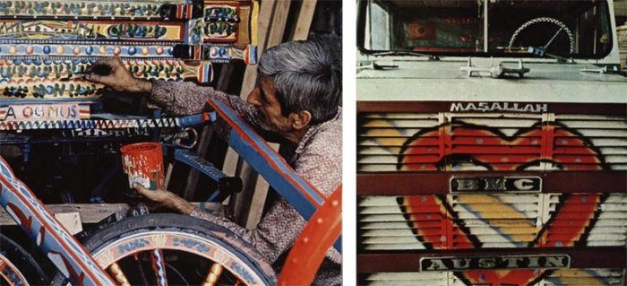
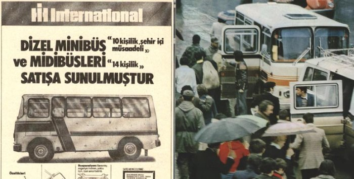
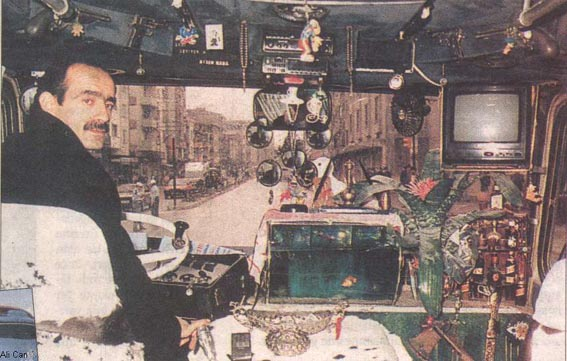

|
Bu
paralelde hem iþlev, hem de iþlevsellik ayrýca kullanýcýnýn
içinde bulunduðu toplumun çeþitli niteliklerinden de etkilenmeðe
baþlar. Baskýn yaþam biçimleri, toplumsal deðer yargýlarý,
toplumsal alýþkanlýklar, vb bu tür niteliklerden birkaçýna
örnek olabilir. Kullanýcýnýn kiþilik yapýsý da kýsmen toplumsal
yapýlanmanýn yansýmasýdýr. Örneðin teknolojiye duyarlý bir
toplumda teknolojiye duyarlý bireylerin sayýsý fazladýr.
Toplumsal
yapý, öte yandan, kullanýcýnýn beðeni tercihlerinin de temel
tanýmlayýcýsýdýr. Beðeni tercihleri bireyin estetik tercihleri
paralelinde oluþur. Estetik yapýlanma ise bir toplumun en
belirgin sosyo-kültürel niteliklerinden biridir. Toplumsal
dinamik içinde belli estetik deðerler (biçimler, renkler,
dokular, oranlar, sesler, vb) benimsenir ve bu deðerler giderek
bireyin beðeni yapýlanmasýný etkiler. Bireyin beðeni yapýlanmasý
ise, diðer bir ifade ile, kullanýcýnýn beðenisidir.

Þekil 6: At arabasýný rengarenk bezeyen Türk, kamyonunu
da ayrý tutmaz
Bu
iliþkiler zinciri, kuþkusuz, otomotiv tasarýmýnda ne türlü
etkileþimler yaþanabileceðine de ýþýk tutmaktadýr. Bir aracýn
tümünün ya da bir parçasýnýn tasarýmý, potansiyel pazarýn
yani potansiyel kullanýcýnýn yapýlanmasý paralelinde gerçekleþtirilecektir.
Özellikle global deðerler gözönüne alýndýðýnda güçlü yerel
nitelikler sergileyen durumlarda bu tür tasarým kriterleri
daha da önem kazanýr.
Türkiye
ve Türk otomotiv tasarýmý düþünüldüðünde dolmuþ-minibüs olgusu
yerinde bir örnek olur. Kýsaca bir geliþim çizgisi çizilirse,
dolmuþ kavramý Türkiye'nin büyük kentlerinde toplumun taksi
türü ulaþýmý daha ekonomik olarak uygulayabilme yöneliminden
kaynaklanmýþtýr. Taksilerin paylaþýldýðýný gören sürücü esnafý
bunu bir toplutaþým alternatifi haline getirmiþ, bu alternatif
de zamanla daha organize ve denetimli bir biçime dönüþmüþtür.
Dolmuþa ilginin artmasý ile araç baþýna beþ kiþi taþýmak yerine
önce strapenteli araçlarla yedi-sekiz kiþi taþýnmaya baþlanmýþ,
daha sonralarý onüç-ondört kiþilik minibüsler bu iþe "uygun"
bulunmuþtur. Dolmuþ-minibüsler dolmuþ tipolojisini otobüse
yaklaþtýrmaya baþlamýþlarsa da tarfelerinin olmayýp dolunca
kalkmalarýyla ve duraklarý olmayýp heryerden yolcu alýp indirebilmeleriyle
ciddi avantajlar edinmiþlerdir.

Þekil
7:
Minibüs olgusu
Zaman içinde dolmuþ-minibüsler tasarým açýsýndan, uyarlandýklarý
düz minibüslerden çok daha farklý ve zengin nitelikler (=
tasarým ölçütleri?) sunmaya baþlamýþlardýr. Bugün özellikle
dolmuþ olarak kullanýlacak bir minibüsün tasarýmý düz bir
minibüsün tasarýmýndan çok daha farklý olacaktýr ve bunun
temelleri doðrudan Türk toplumsal yapýsýnýn ve Türk bireyinin
belli niteliklerinde yatacaktýr.
Örneðin:
Dolmuþ çok sosyal ve etkileþim düzeyi yüksek bir ortamdýr.
Gerek yolcular arasýnda, gerekse yolcularla sürücü arasýnda
etken bir iletiþim oluþur. Bunun dolmuþun iç mekanýna, koltuk
tasarýmýna, iç mekan donatýmýndaki bazý detaylara etkisi olacaktýr.
Bu sosyalleþmenin ve Türk toplumsal yapýsýndaki "insana
güven" olgusunun bir çýktýsý yolculuk ücretinin sürücüye
iletilmesi yöntemidir ki, mevcut iyi niyetli çözümlere raðmen,
belli tasarým öðelerinin katkýsý ile çok daha iyileþtirilebilir,
sürücünün dikkatini yoldan ayýrmadan bu sürecin gerçekleþmesi
saðlanabilir. Sürücünün aracýný kiþiselleþtirmesi her ne kadar
resmi yaklaþým içinde sýcak bakýlan bir durum deðilse de hem
insanlarýn genel psikolojik ihtiyaçlarý açýsýndan, hem de
dolmuþ-minibüs sürücüleri özelinde bu durum en azýndan dikkate
alýnmasý doðru olacak bir noktaya iþaret eder.

Þekil 8:
Minibüs/sürücü ortak yaþamý
Bu
konuda yapýlacak araþtýrma ve çalýþmalar sonucu sürücüye belli
kiþiselleþtirme olanaklarý tasarým bütünü içinde tanýmlanmýþ
olarak sunulabilir ve böylece hem istenmeyen böylesi müdahaleler
kontrol altýna alýnmýþ olur, hem de sürücünün psikolojik açýdan
tatmini saðlanýr. Dolmuþ-minibüs müþterisi çoðunlukla elinde
birþeyler taþýyan, evine birþeyler götüren bir profile sahiptir.
Aracýn tasarýmýnda bu tür paket/poþet benzeri nesnelerin konmasýný
düþünmek daha kullanýcý odaklý bir tasarýmla sonuçlanacaktýr.
Dolmuþ-minibüs aracý özelinde bu tür örnek ya da baþlýklar
çoðaltýlabilir. Yapýlacak bilinçli araþtýrmalar ne tür tasarým
özelliklerine yönelinebileceðini, ne tür çözümlerin sosyal,
psikolojik, güvenlik, verimlilik, rahatlýk, vb açýlarýndan
yararlý olabileceðini gösterecektir.
Bir
diðer örnek þehirlerarasý otobüslerin koltuklarýna iliþkin
olabilir. Türk nüfusun vücut ölçüleri Avrupalý nüfusunkinden
çok farklý nitelikler gösterir. Türkiye'de boy ortalamasýnýn
daha düþük olmasýnýn yaný sýra beden-bacak oranlamasý da deðiþiktir.
Bunun sonucunda Avrupa kullanýcýsýna göre tasarlanmýþ otobüs
koltuklarý Türk yolcular için rahat bir yoculuk saðlamakta
baþarýsýz olmaktadýrlar. Dolayýsý ile Türklerin vücut ölçülerine
göre tasarlanmýþ koltuklarýn Türkiye'de ve iç pazar için üretilen
otobüslerde kullanýlmasý müþteri memnuniyetini arttýracak,
bundan da önemlisi Türk toplumuna fiziksel (saðlýklý oturma
ve yolculuk) ve ruhsal (memnuniyet ve tatmin) katkýda bulunacaktýr.
Endüstriyel
tasarým sürecinin çýktýlarýnýn iç pazarla sýnýrlanmasý gerekmez.
Dýþ pazara yönelik üretim yapan otomotiv sanayii ve otomotiv
yan sanayii kuruluþlarý da amaçladýklarý pazarýn niteliklerini
analiz ederek özgün tasarýmlar üretilmesi için çalýþmalar
yapabilirler. Global pazardan çok bu tür niþ pazar çözümlerine
yönelinmesi ayrýca firmalarýn genel stratejileri olabilir.
Bu
tür yaklaþýmlar, yaklaþýmlara örnekler arttýrýlabilir. Bu
evrede önemli olan Türk otomotiv sanayiinin "otomotiv
tasarýmý"ný "konsept otomobil tasarýmý"nýn
ötesinde görmesi, imajlardan çok akýlcý ve doðru çözümlerin
(ki o imajlar da aslýnda akýlcý ve doðrudurlar, pazarda yer
alabildiklerine göre) endüstriyel tasarýmla elde edilebileceðini
bilmesi, bu paralelde Türk tasarým gücünü kullanmaya baþlamasýdýr.
Gönül, otomotiv sanayiimizin Türk mühendisleri ile öðündüðü
kadar Türk endüstriyel tasarýmcýlarýyla da öðünmesini ister.
4.
SONUÇ
Sonuç
olarak belitilmesi gereken, Türk otomotiv sanayiinin dikkatlice
belirlenmiþ, saðlýklý bir ihtiyaç analizi yapýlmýþ, kullanýcý
profilinin nitelikleri saptanmýþ pazarlar için özgün tasarýmlar
üreterek bir varlýk göstereceðine iliþkin kanýdýr.
|